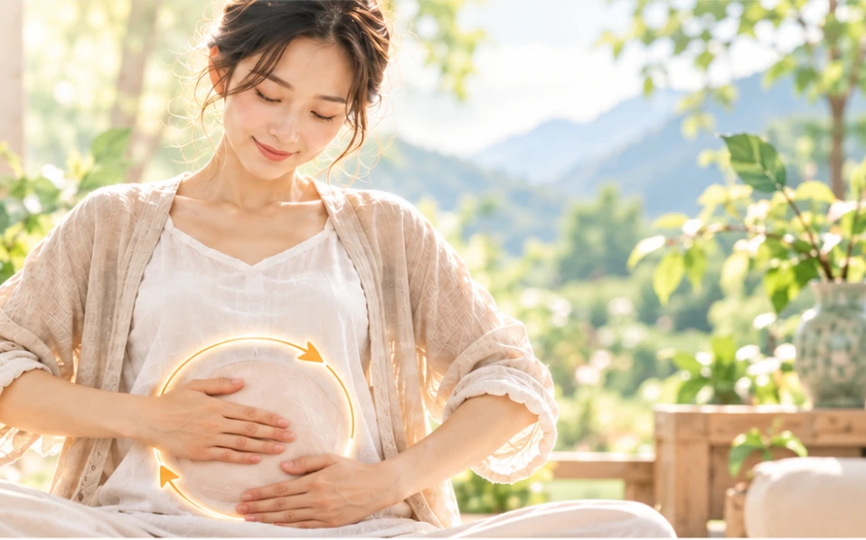

俗話說的好：「肚子軟綿綿，百病懶得纏」，摩腹是自古流傳下來的養生方法，重要卻簡單易行，更何況它不受時間及空間的限制，所以廣為大家推崇。
陸游不僅是宋代的愛國詩人，是一位相當注重養生的專家，享壽八十五歲，他的養生之道，可由他的創作當中略窺一二，「摩腹」正是他每天堅持所做的方法之一，並在詩文中多次提到「飯余解帶摩便腹」、「飯後自做揉腹功」、「解衣許我閒摩腹」。
藥王孫思邈在《千金要方》中說：「摩腹數百遍，則食易消，大益人，令人能飲食，無百病。」，更是大力提倡「食百步後行，常以手摩腹」，做為長壽養生之道。
清代養生家方開認為摩腹之法「能通和上下，分理陰陽，去舊生新，充實五臟，驅外感之諸邪，消內生之百證，補不足，瀉有餘，消長之道，妙應無窮」
「摩腹」為何這麼重要？
腹部被喻為五臟六腑之宮城，陰陽氣血之發源，不只許多的重要的器官如肝、胃、膽、小腸、大腸、膀胱⋯等都在裡面，更有許多的經絡通過，所以通過摩腹不但可以增加胃腸蠕動、強健脾胃，還能疏通經絡，調和氣血。
該如何進行「摩腹」呢？
同樣先將雙手摩擦生熱，之後再將一手輕按腹部，手心對著肚臍，以肚臍為中心由小到大地往外畫圈，一圈一圈地慢慢增大範圍，直到按摩到整個腹部，接下來再用另外一隻手反方向地由大到小向內畫圈，一圈一圈地慢慢縮小範圍，最後收回到肚臍。
按摩的時候力度要適中，速度要柔緩，每個人可以根據自己的情況，反覆進行，次數不限，以微微感覺到腹部發熱為宜，如果有腹部方面的疾病，或是感覺到腹部不舒服的時候，就暫時不要摩腹，當然，孕婦也不適合這個動作。
在做所有身心放鬆術的動作時，都要抱持一個心態，那就是：「只做功夫、莫貪效驗」，只要日積月累、續而不斷地進行，效果將會不求至而自至。
通常我在跟學員分享這個動作的同時，都會教上一個口訣：「摸摸金元寶、財源滾滾來；摸摸金元寶、好運旺旺來；摸摸金元寶、福氣跟著來。」
千萬別笑，「金」指的是水中金，產在坤，而坤為腹，在人身中為至寶，所以不就是個「金元寶」嗎！
人生最難的就是「忙裡偷閒」，此閒不從忙中取，一輩子都是忙忙碌碌的，「摩腹」和接下來要介紹的「閒庭信步」，最適合用這種的心態來進行，不是每個身心放鬆術都要保持認認真真的態度，偶爾放放心，反而會有意想不到的效果。
今天是不是又學會一招了呢，別光只是看，待會就來試試吧！
身安是福、心安即氣，身安心安、福氣自來。